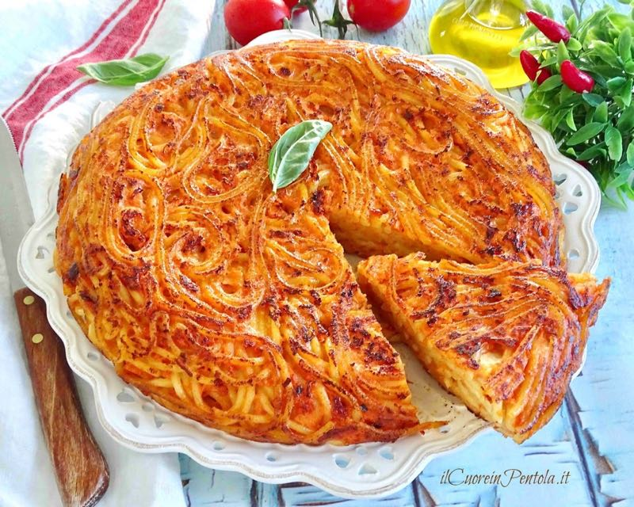

Ingredienten
-
Spaghetti 350 g
-
5 eieren
-
100 gram volle melk
-
50 Parmigiano Reggiano DOP om te raspen
-
50 gram Gerookt spek
-
Zwarte peper 1 snuifje
-
100 gram Gerookte scamorza
-
Tijm 1 takje
-
Extra vierge olijfolie naar smaak
Bereiding
-
Om de spaghetti-omelet te maken, zet je eerst een pan met gezouten water op het vuur en breng aan de kook, dit wordt gebruikt voor het koken van de pasta. Zorg intussen voor de vulling: snijd de gerookte bacon en de scamorza in blokjes, zodra het water kookt, giet je de spaghetti erbij en kook je deze heel beetgaar
-
Giet de eieren in een grote kom, voeg de gepofte tijm en de melk toe, voeg dan zout en peper toe .
-
Breng nu op smaak met geraspte kaas en meng goed tot een homogeen mengsel . Voeg de vulling toe en meng opnieuw.
-
Zodra de pasta gaar is, giet je deze af in een kom en breng je op smaak met een scheutje olijfolie . Voeg de pasta toe aan de vulling en roer opnieuw om te mengen. Neem een wijd uitlopende pan (wij gebruikten er een met een diameter van 30 cm aan de bovenkant en 26 cm aan de onderkant). Bak de olie bruin met een teentje knoflook.
-
Verwijder het teentje knoflook en giet de spaghetti erin. Verdeel ze gelijkmatig met een spatel, kook dan 1 minuut op hoog vuur om de bodem hard te maken, zet het vuur lager, dek af met het deksel en kook 15 minuten.
-
Het is tijd om de omelet om te draaien: schud de pan om ervoor te zorgen dat hij loskomt van de bodem, plaats een bord met de diameter van je pan op de omelet, draai de pan ondersteboven en kook nog 5 minuten zonder deksel. De omelet is klaar, geniet ervan in warme of koude plakjes!